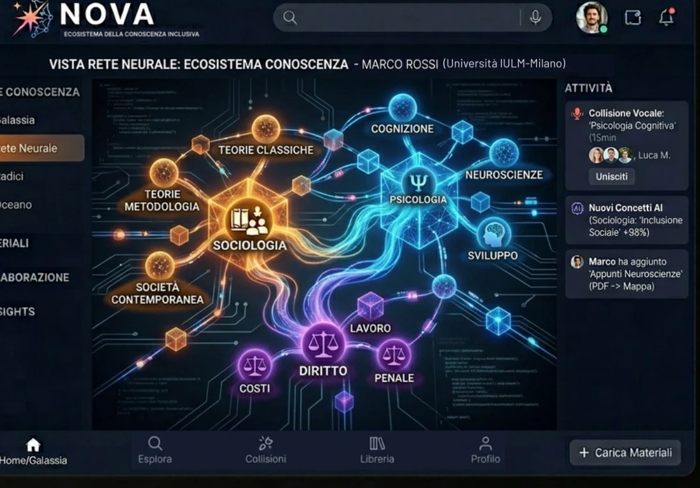
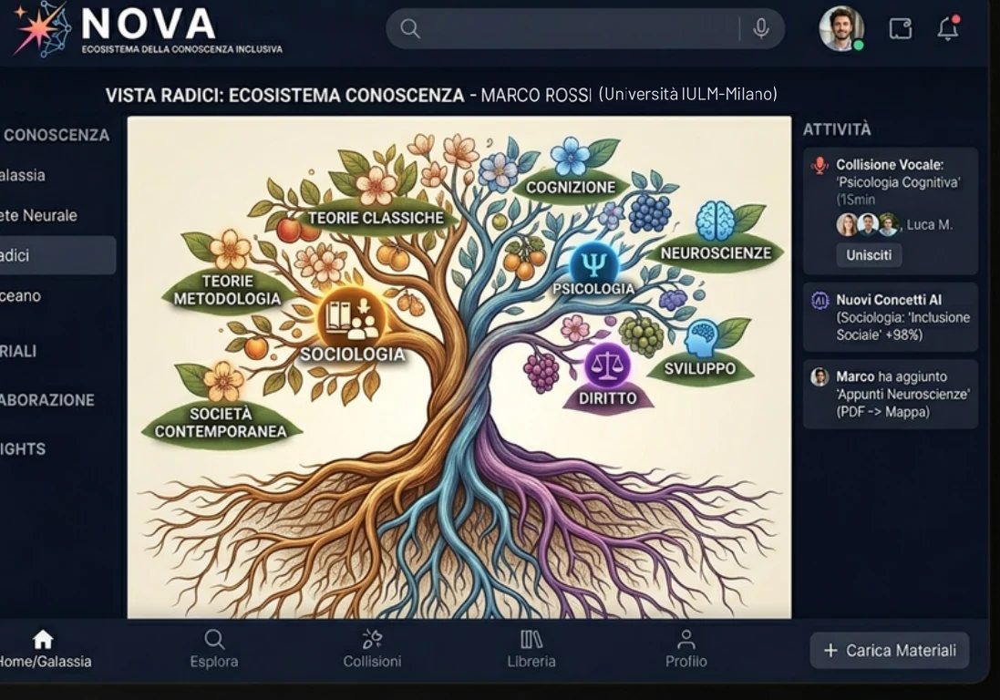
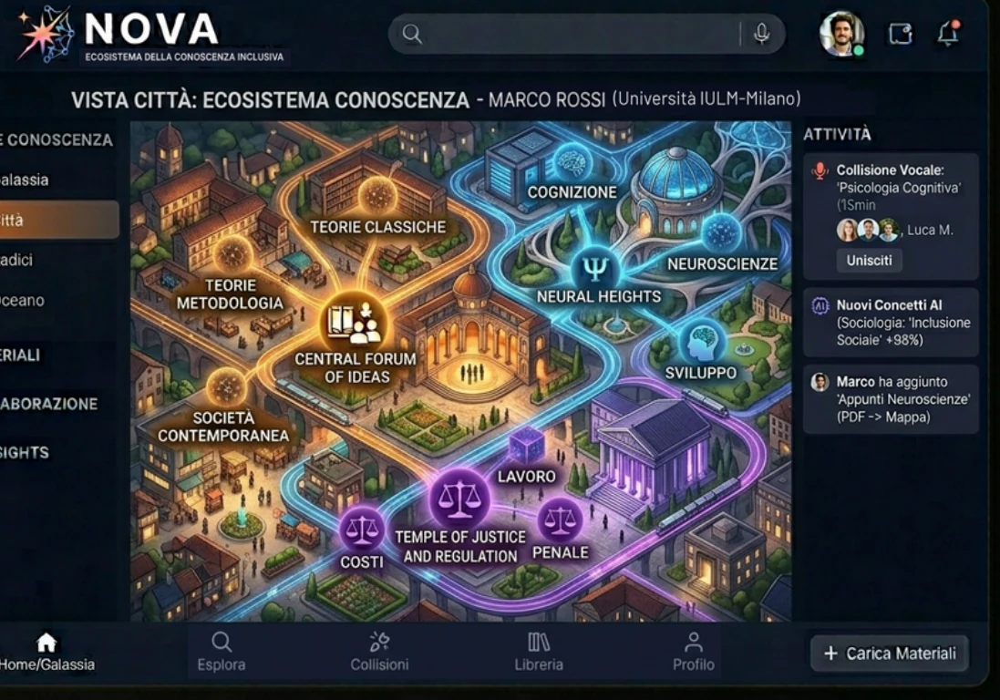
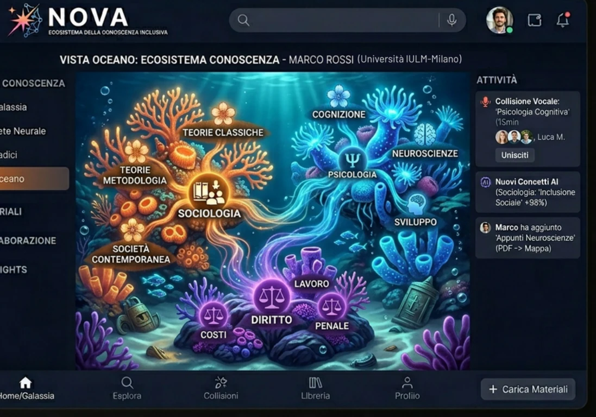

Personal Knowledge Graph
Un modello di organizzazione dei materiali didattici in reti di concetti e relazioni, con possibili applicazioni di NLP e RAG.
Ripensare l'apprendimento universitario attraverso intelligenza artificiale, personalizzazione e collaborazione.

NOVA è un concept di piattaforma EdTech che immagina un ambiente di apprendimento universitario capace di collegare materiali, adattare le modalità di studio e favorire la collaborazione tra studenti. Il progetto nasce come proposta individuale per Talent & Creativity 2026.
L'esperienza universitaria può essere caratterizzata da materiali distribuiti tra piattaforme diverse, modalità di studio poco personalizzate e occasioni di collaborazione non sempre facili da individuare. NOVA esplora una possibile risposta integrata a queste criticità.
Un modello di organizzazione dei materiali didattici in reti di concetti e relazioni, con possibili applicazioni di NLP e RAG.
Contenuti e rappresentazioni adattabili alle esigenze individuali: mappe, audio, video esplicativi e traduzione semantica.
Un sistema di matching tra studenti con interessi e argomenti comuni, pensato per facilitare sessioni collaborative chiamate “Collisioni”.
La proposta esplora diverse metafore visive per rappresentare percorsi di apprendimento e connessioni tra concetti. Queste immagini, generate con AI, illustrano direzioni possibili per l'esperienza NOVA.




Ho sviluppato individualmente il concept di NOVA: analisi del bisogno e del contesto EdTech, modellizzazione delle funzionalità AI, esplorazione visiva assistita da AI e valutazione preliminare delle condizioni di realizzazione.
La proposta considera anche le principali sfide di una possibile implementazione: tutela dei dati personali e GDPR, copyright dei materiali, qualità e bias dei sistemi AI, scalabilità e sostenibilità economica. Il documento include una stima preliminare per fasi di sviluppo, non un budget validato.
Consulta la presentazione completa del concept NOVA, con analisi, funzionalità proposte e visualizzazioni progettuali.
Apri il progetto PDFProgettazione concettuale individuale · Talent & Creativity 2026 · Applicazione non sviluppata
Le funzionalità descritte sono proposte progettuali; non sono state implementate o testate con utenti.